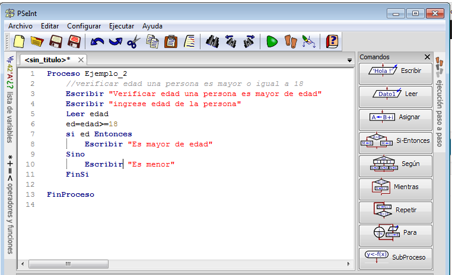
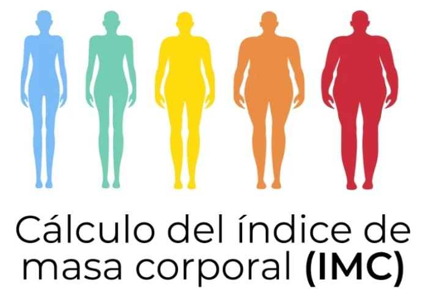
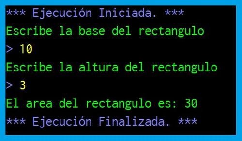

Ejercicio de condicionales
Proyectos Pseint1. Realizar un programa en el cual se solicite la edad de una persona. Si la persona es mayor o igual a 18 años, deberá mostrar en pantalla: Usted es mayor de edad.
2. Realizar un programa en el cual se solicite la edad de una persona. Si la persona es menor a 18 años, deberá mostrar en pantalla: Usted aún es un niño(a).
Ver codigo, punto 1 y 2.
3. Realizar un programa en el cual se solicite el nombre, apellidos y edad de la persona. Si la persona es mayor o igual a 18 años, entonces se deberá imprimir en pantalla [Nombre completo] usted es mayor de edad, por lo tanto puede entrar a la fiesta. Si la edad de la persona es menor que 18 años, entonces, deberá imprimirse el siguiente mensaje: [Nombre completo] usted es menor de edad, por lo tanto, no puede entrar a la fiesta, por favor devuélvase a su casa.
Ver codigo, punto 3.4. La video tienda que presta sus servicios de alquiler de películas a los usuarios del barrio el Porvenir, requiere de una aplicación que permita registrar el alquiler de las películas que adquieren sus usuarios. Para cada usuario se debe permitir la opción de alquilar película, consultar películas disponibles y recibir película en la video tienda con la opción de realizar anotaciones sobre estas si se llegan a presentar daños u otra novedad sobre la película.
Ver codigo, punto 4.
5. La Droguería Mi Salud presta sus servicios en la localidad de Suba y requiere una aplicación para poder facturar los productos que vende a sus clientes y para ello, los productos tienen unas características que deben indicársele al cliente para que pueda escoger el producto a comprar. Para cada cliente, se tienen las opciones de compra de producto, consulta de precios por producto y devoluciones en caso de que se presenten.
Ver codigo, punto 5.
6. El taller de motos "El Maquinista" recibe motocicletas de alto cilindraje para realizar las respectivas revisiones y requiere una aplicación que le permita registrar los servicios generados a sus clientes. Para cada motocicleta se debe tener registro del ingreso al taller y las observaciones por parte del cliente. También debe existir registro de salida del taller con las novedades y otra de arreglos hechos por el mecánico en caso de que se requiera inventariar cambios repuestos en la motocicleta al entregarla.
Ver codigo, punto 6.
7. La Secretaría de Salud Municipal requiere de una aplicación que le permita calcular el IMC (Índice de masa corporal) y requiere los datos peso en kilogramos y estatura en metros Para cada persona encuestada adicional a los datos suministrados, debe mostrar el resultado para cada uno y establecer en qué rango se encuentra (bajo peso, normal, sobrepeso y obeso).
Ver codigo, punto 7.
8. El pastelero Don Carlos es el mejor pastelero de la ciudad y requiere una aplicación que le permita registrar los pedidos de los clientes en cuanto a las tortas que realiza. Cada torta tiene unas características propias como sabor, cantidad (porciones) y decoraciones. Se requiere que la aplicación permita registrar los pedidos, las tortas disponibles y las ventas que se registren diariamente.
Ver codigo, punto 8.
9. El profesor de geometría está explicando a sus estudiantes las fórmulas para calcular el área de diferentes figuras geométricas, para ello requiere una aplicación que le facilite el ejercicio solicitándole los valores al estudiante. La aplicación debe permitir que el estudiante seleccione si desea calcular el área de un rectángulo, triángulo o trapecio. No olvide solicitar los datos necesarios para realizar cada cálculo y mostrar su respectivo resultado.
Ver codigo, punto 9.
10. El banco "Su banco fiel" es un banco que inicia sus actividades financieras y necesita una aplicación para llevar las cuentas de sus usuarios; por lo tanto, se sugiere que la cuenta tenga los atributos titular y cantidad. Para cada cliente las cuentas permitirán realizar ingresos, retiros o consultas de valor. En los ingresos no se pueden insertar valores negativos y para los retiros el valor no puede ser mayor al valor que tiene en la cuenta.
Ver codigo, punto 10.